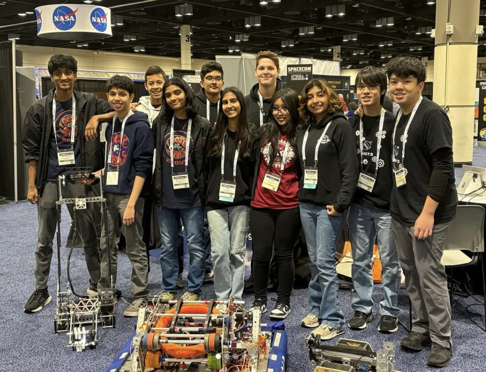
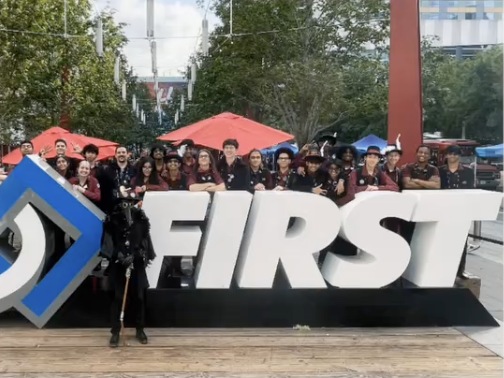
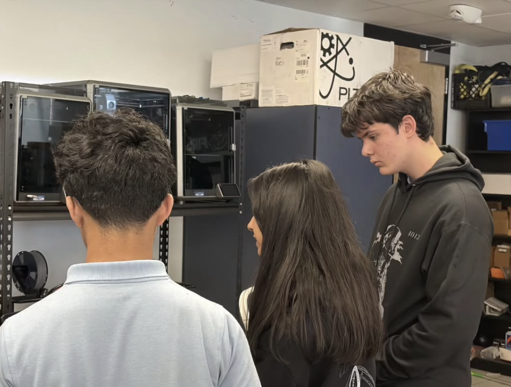
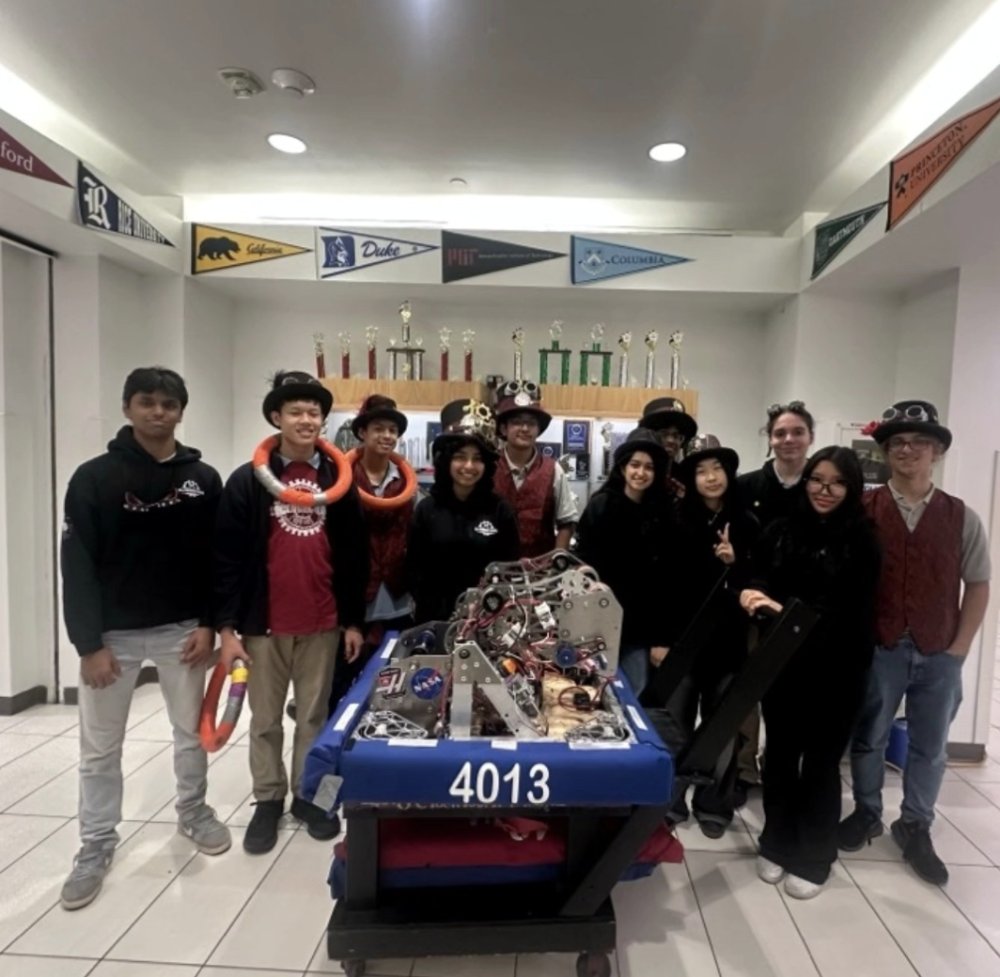
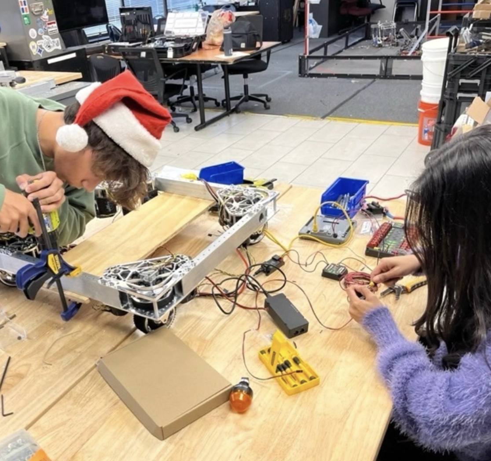

4013 Clockwork Mania
January 2025 - August 2025
I joined Clockwork Mania, an FRC team, for the 2025 season, working across the CAD, electrical, mechanical, and strategy subteams to help build the robot, while also pitching in on outreach when needed. The hands-on build process gave me experience with CNC machining, resin and FDM 3D printing, laser cutting, soldering, and manual fabrication tools like drill presses, miter saws, band saws, and table saws, working across metal, wood, polycarbonate, and acrylic. Specifically, I specialized in 3D printers, fixing clogged nozzles, broken ceramic heaters, fried mainboards, and soldering on mismatching ports. That season, the team won the Impact Award, the most prestigious award at the Magnolia Regional, recognizing our impact both on and off the field. Beyond the competition itself, the team's work has been featured on local news outlets including Fox 35, WESH 12, and Space TV, and showcased at industry conferences like SpaceCom and ITSEC. Even in a single season, the experience deepened my fabrication skills and gave me a close look at how a larger, more established program operates at a higher level of competition.





Grinder
Grinder is our 2025 FIRST World Championship robot, competing in a game called Reefscape. Grinder utilizes a swerve drive allowing it to move in any direction at max speed while maintaining sufficient ground grip during collisions with other bots. Atop the base, Grinder features a 3 stage elevator to allow for gamepiece pickup at all heights. On the elevator, our intake/outtake allows for both algae and coral to be carried and placed in their respective locations. The algae intake squished the 16” rubber balls to maintain sufficient grip and the coral intake utilized flexible rollers to facilitate handling. Metal parts were machined with a CNC while plastic parts were 3D printed with nylon, and resin. Overall, Grinder is optimized to be fast, versatile, and defend against opponents' bots.
Robot Cart
I also lead the construction of the robot cart. We utilized a 3 division cart that would be able to carry the robot securely, have extra storage for batteries, and have a mount for the drivers station which would in turn carry the controllers. The whole frame is made of aluminum extrusions, cut and jointed using side plates. The part where the robot is rested on had an open base that allowed for easy work on the bottom of the bot while elevated. This would latch to the storage compartment and the drivers station would rest atop the storage compartment.